Revised from your comments: strict offline-only routing, preferred-provider fallback, downloads in the existing region panes, and route status in the existing bottom-left chip.
Navigation preferences
Approved referencePrefer online
When: Offline maps only is off; Online is selected.
Proposal: Use a valid online route when it succeeds. If it is unavailable or fails, try the downloaded offline route once. Proposed default: this setting, with Offline maps only off.
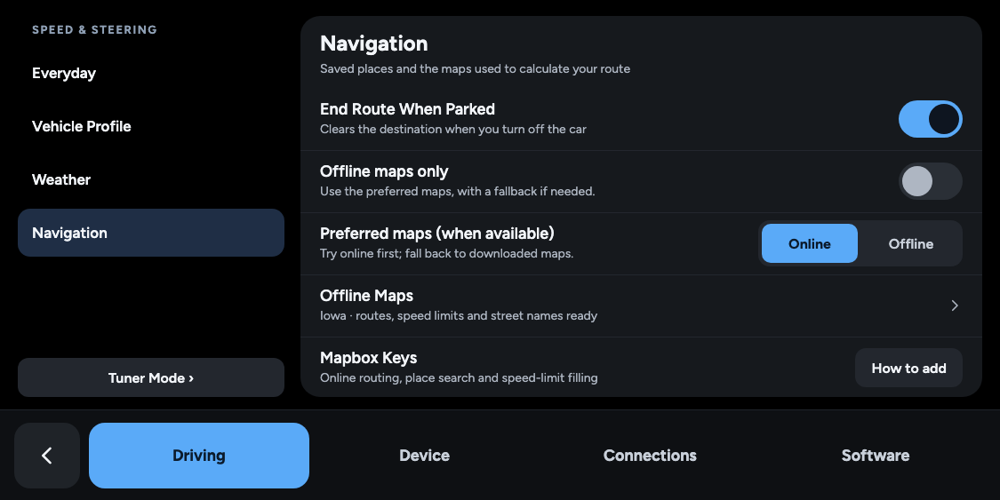
Open mockFull-size PNGTop
Approved referencePrefer offline
When: Offline maps only is off; Offline is selected.
Proposal: Try a usable local route first. Missing coverage/data, a local failure, or no route triggers one online attempt if online routing is usable.
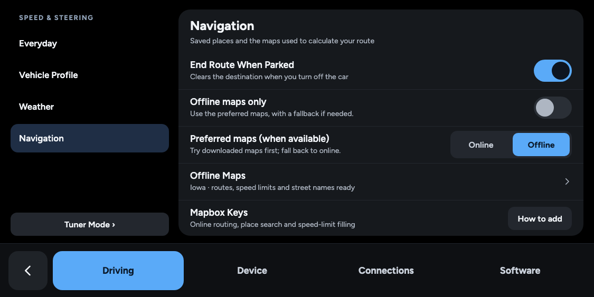
Open mockFull-size PNGTop
Approved referenceOffline maps only
When: Offline maps only is on.
Proposal: No online routing request and no online routing fallback. Preferred maps is disabled and remembers its prior selection for when the override is turned off. Search remains a separate online feature.
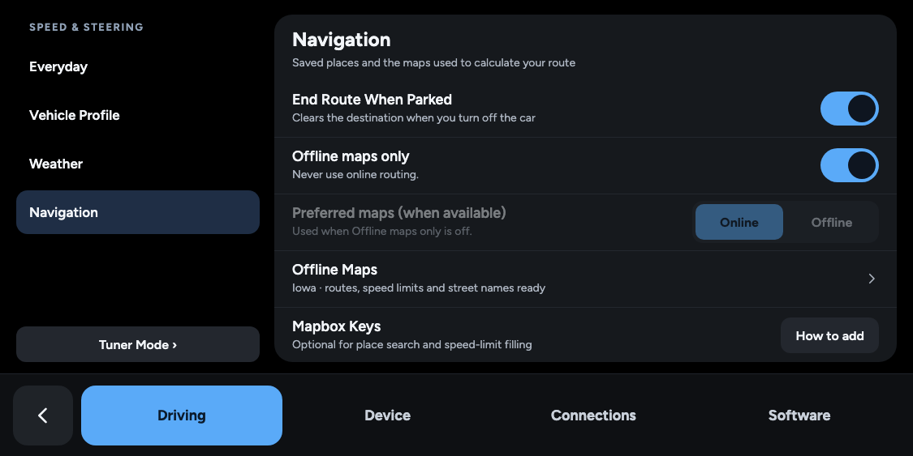
Open mockFull-size PNGTop
Approved referenceOffline only, maps missing
When: Offline maps only is on, but Iowa offline routes have not been downloaded.
Proposal: Keep the strict choice. The Offline Maps row leads to the existing region panes to obtain the missing maps. Do not silently use online routing.
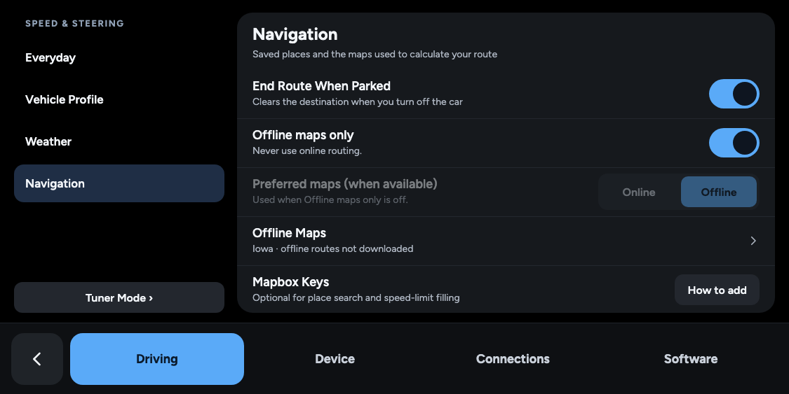
Open mockFull-size PNGTop
Region-download ideas
Approved reference · Option A · RecommendedA · One selection downloads all missing maps
When: Choose Iowa in the existing U.S. states pane. This example already has its road data.
Proposal: Recommended: one region selection and one Download action. Add its 280 MiB routing data without redownloading the road data. Software setup happens as part of Prepare, with no separate user step.
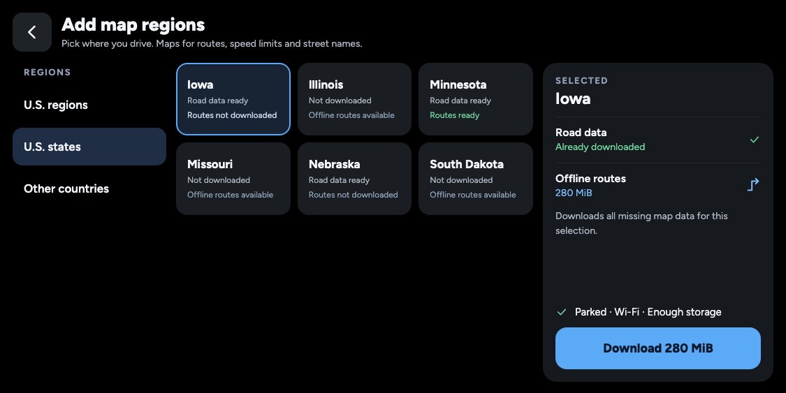
Open mockFull-size PNGTop
Not selected · Option BB · Optional offline-route download (not selected)
When: Historical alternative retained for reference. The owner selected downloading both map sets.
Proposal: Do not implement the component checkbox. Region selection downloads all missing road data and offline routes automatically.
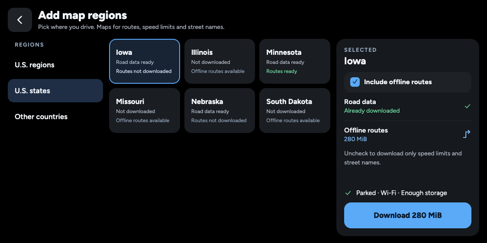
Open mockFull-size PNGTop
Approved reference · Option AExisting U.S. region groups
When: Select U.S. regions rather than individual states.
Proposal: Use the same catalog and summary for multi-state coverage. The available routing package must cover the selection as a connected graph; unsupported combinations are not labelled ready.
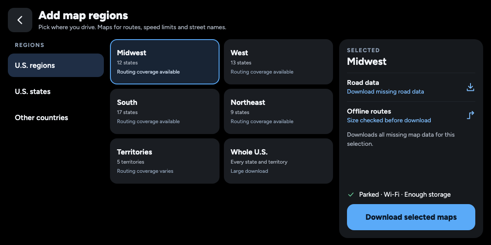
Open mockFull-size PNGTop
Approved reference · Option AExisting country pane
When: Select Other countries and a country.
Proposal: The same flow handles countries. Catalog availability shown here is illustrative; the small Liechtenstein graph was used for the standalone trial.
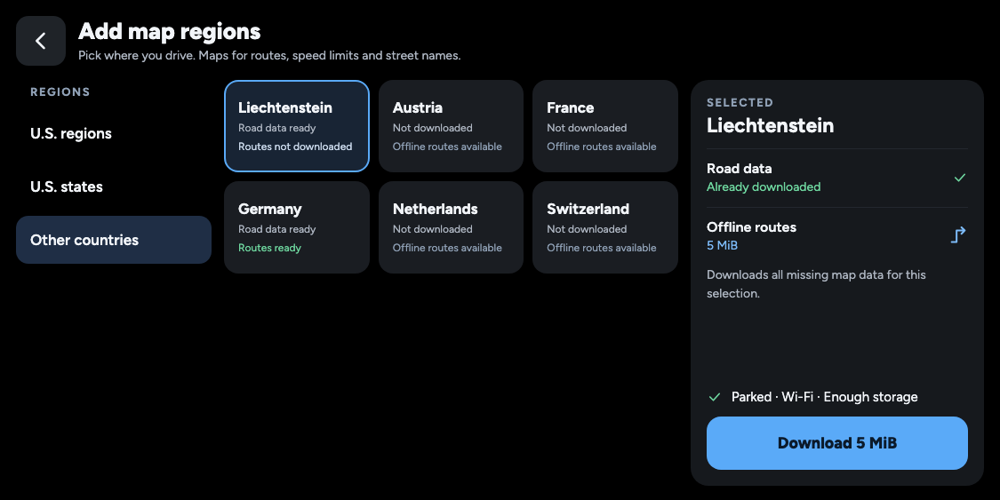
Open mockFull-size PNGTop
Approved reference · Option AA region without routing coverage
When: The catalog can provide road data for a selected region but has no published routing package.
Proposal: Show the limitation in the same pane. Road data may still download. Offline maps only never falls back online, so it cannot route there until coverage is provided.
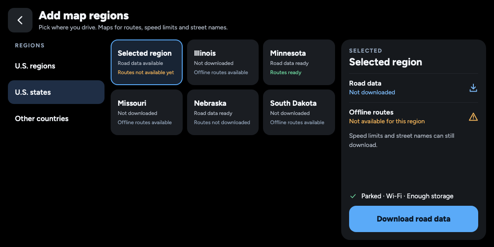
Open mockFull-size PNGTop
Shared maps management
Approved referenceOne Offline Maps page
When: Open Offline Maps from Navigation, Display, or Where to? after Iowa is ready.
Proposal: The existing maps page shows both data types, a shared update schedule, per-region Update/Remove actions, and Choose regions. No routing-software or URL page is needed.
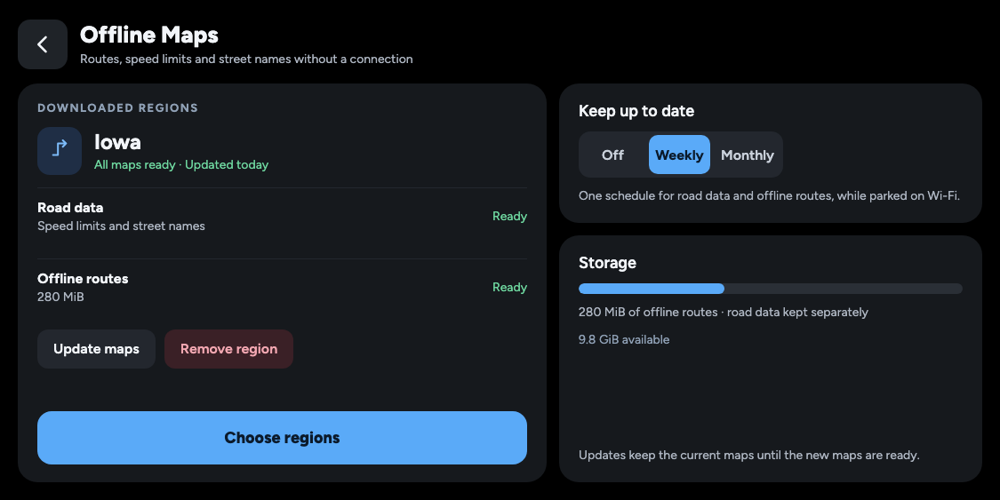
Open mockFull-size PNGTop
Approved referencePrepare in the current layout
When: A selected region needs download preparation, including automatic routing-software setup on first use.
Proposal: Keep the current percentage, bar, four steps, region tiles, footer and background-download message. Both map sets are included automatically.
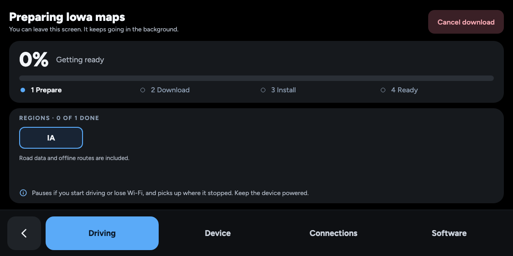
Open mockFull-size PNGTop
Approved referenceOffline routes, current progress layout
When: Iowa road data is already installed and its offline-route download is at 42%.
Proposal: Restore the existing large percentage, single bar and region grid. The small Offline routes label scopes this percentage to routing bytes, while a short line confirms road data is ready.
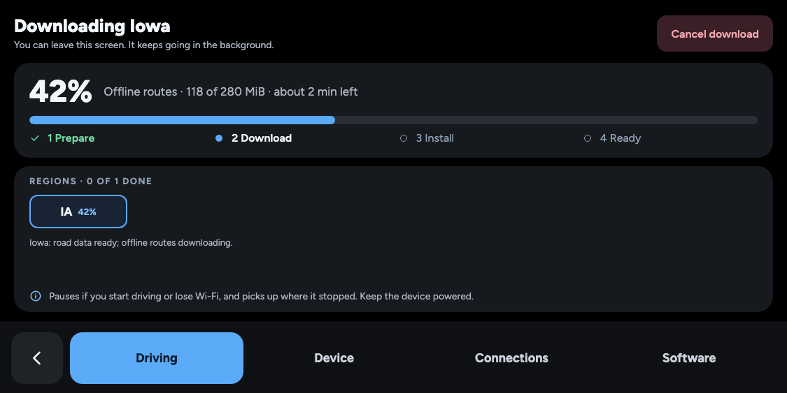
Open mockFull-size PNGTop
Approved referenceRoad data, same progress screen
When: Both map sets are missing; Iowa road data downloads first.
Proposal: Keep the existing file count and region tile. Offline routes follow automatically in the same screen. The phase label and percentage reset explicitly when switching datasets; do not average file counts and bytes.
Open mockFull-size PNGTop
Approved referenceMultiple regions, familiar tiles
When: A Midwest download has finished both map sets for five states and is downloading Minnesota offline routes.
Proposal: Keep the current seven-column region grid, completed/current/waiting colors and per-region percentage. A green region means both required map sets are installed; the top percentage describes the labelled download phase.
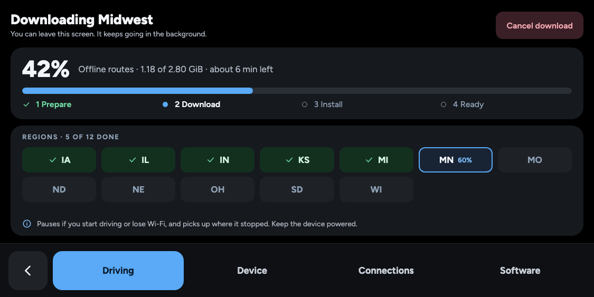
Open mockFull-size PNGTop
Approved referenceInstall keeps the existing step
When: Iowa routing bytes have downloaded, but validation and installation are still running.
Proposal: Keep Install as step three. Download at 100% is not Ready: the region remains current until its maps are checked and installed.
Open mockFull-size PNGTop
Approved referenceRetry in the same layout
When: Road data is ready, but the offline-route download failed.
Proposal: Retain the last reported routing percentage, show the affected region in amber and replace the header action with Retry download. Retry only missing data; keep existing maps.
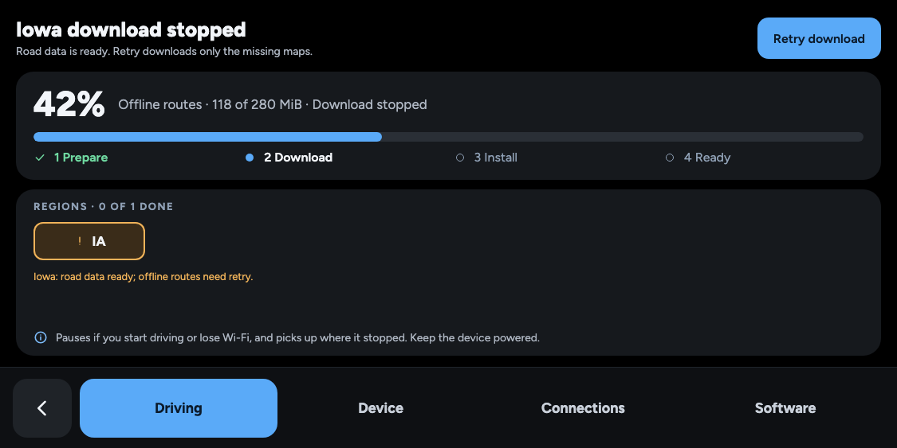
Open mockFull-size PNGTop
Approved referenceReady in the same layout
When: Both selected map sets have passed verification and installed.
Proposal: Advance the existing steps to Ready and turn the region green. Done returns to Offline Maps. No new management screen is introduced.
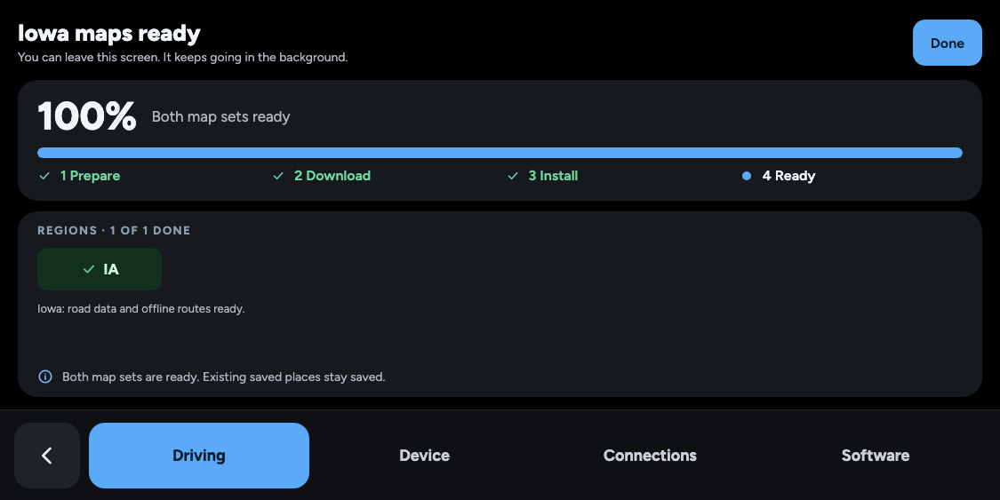
Open mockFull-size PNGTop
Approved reference · Option ARemove a region together
When: Tap Remove region on the shared maps page.
Proposal: Recommended A removes both data types after this confirmation. Saved places remain. Alternative B could offer component removal within the same region detail, if needed.
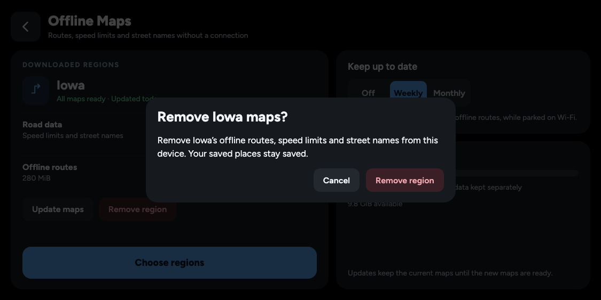
Open mockFull-size PNGTop
Existing status chips
Approved referenceRecalculating route
When: An active trip needs a replacement route.
Proposal: Use the existing bottom-left status-chip placement and dark fill. Keep the time, distance-left and live street in the normal bottom bar. Hide stale turn guidance independently.
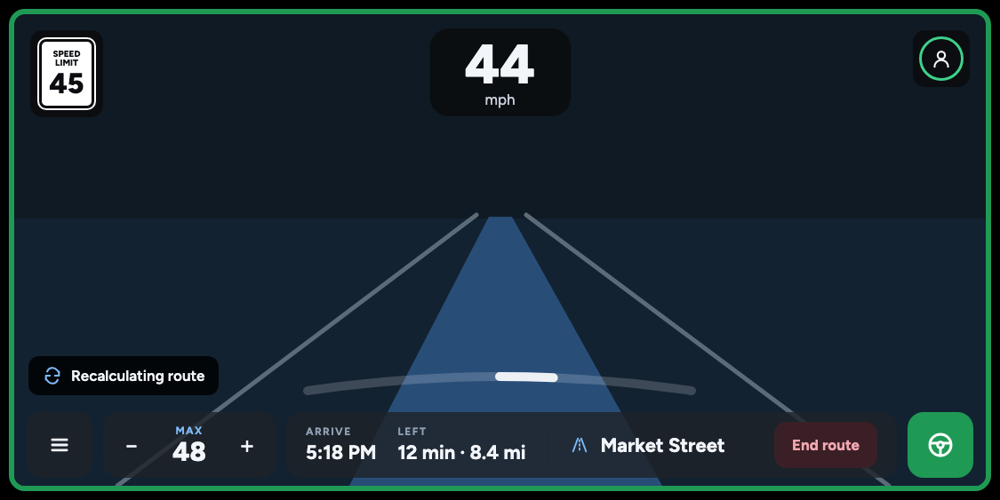
Open mockFull-size PNGTop
Approved referenceOnline failed; offline route works
When: Online is preferred, but its route request fails and a usable offline route succeeds.
Proposal: Using offline maps appears briefly in the existing chip stack, then fades. The time/street layout stays in place.
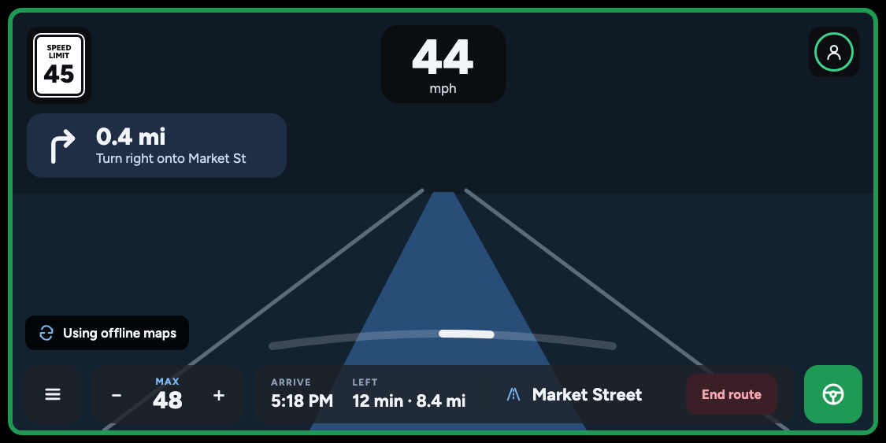
Open mockFull-size PNGTop
Approved referenceOffline failed; online route works
When: Offline is preferred, Offline maps only is off, and a failed/unavailable local route is replaced successfully online.
Proposal: Using online maps appears briefly in the same chip. This state must never occur with Offline maps only on.
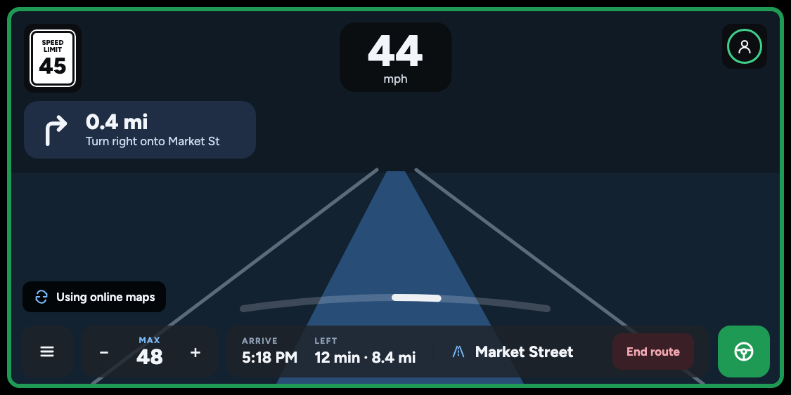
Open mockFull-size PNGTop
Approved referenceOffline only, route unavailable
When: Offline maps only is on but a usable local route is unavailable.
Proposal: The warning uses the existing chip; no online request is made. This example has no previous route estimate, so the time fields show dashes while the available street stays visible.
Open mockFull-size PNGTop
Approved referenceWaiting for GPS
When: The current GPS fix is missing or stale.
Proposal: Show Waiting for GPS in the status chip. Last useful trip estimates may remain visible; they must not be treated as valid turn guidance. This mock illustrates a short interruption.
Open mockFull-size PNGTop
Approved referenceRouting and existing statuses together
When: Recalculation overlaps an existing steering-paused status.
Proposal: Use the existing stack and spacing. Routing is informational and yields to safety alerts; it does not replace or recolor steering warnings.
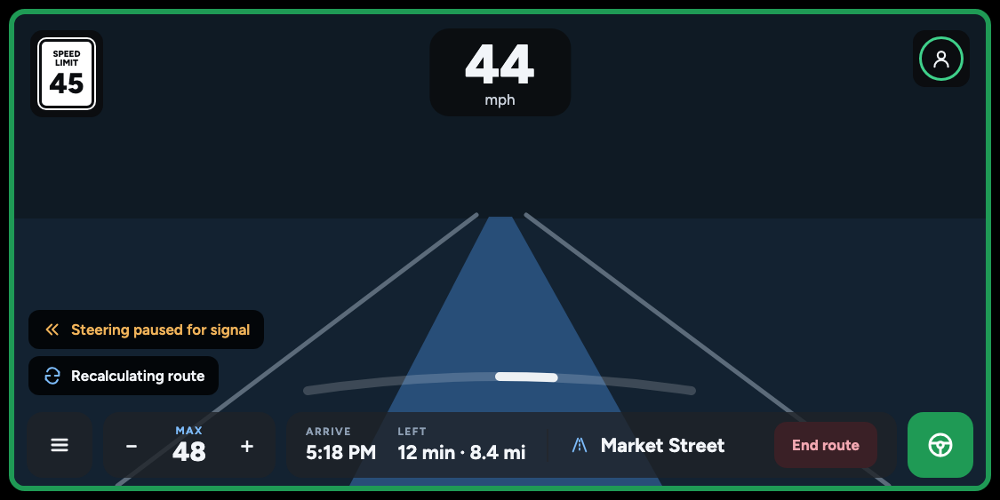
Open mockFull-size PNGTop
Approved referenceFirst route, no previous estimate
When: The first route has not returned any estimates yet.
Proposal: The chip says Finding route. Time fields stay as dashes instead of invented values, and the street remains in its normal place.
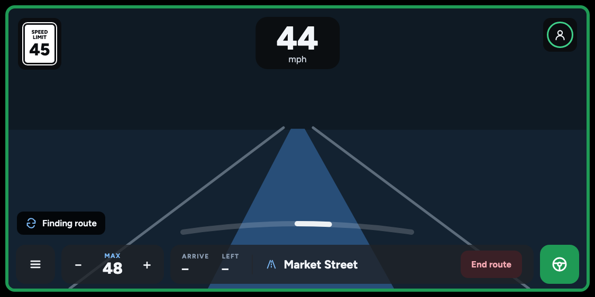
Open mockFull-size PNGTop